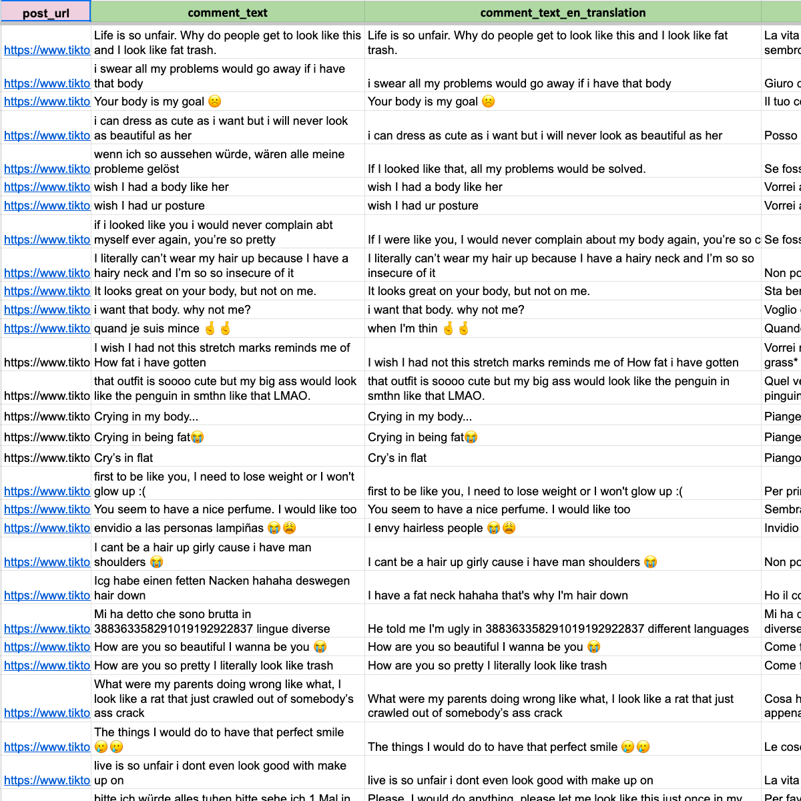
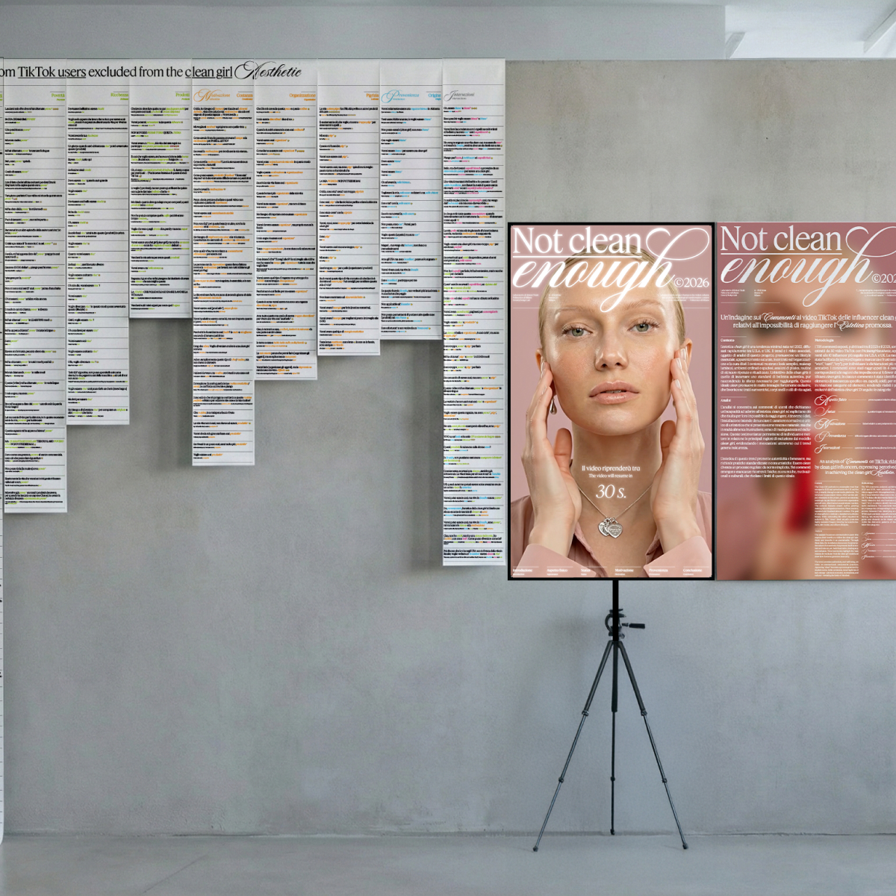
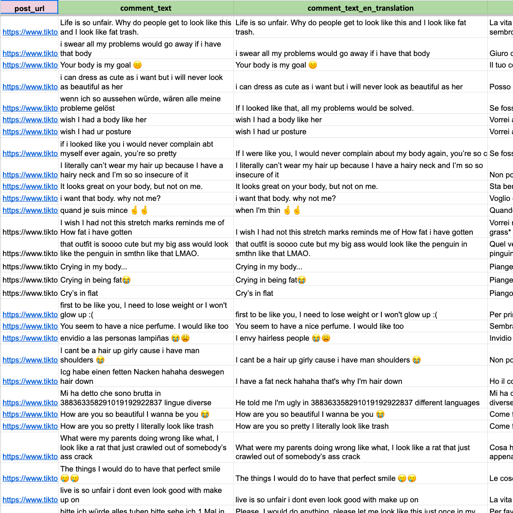
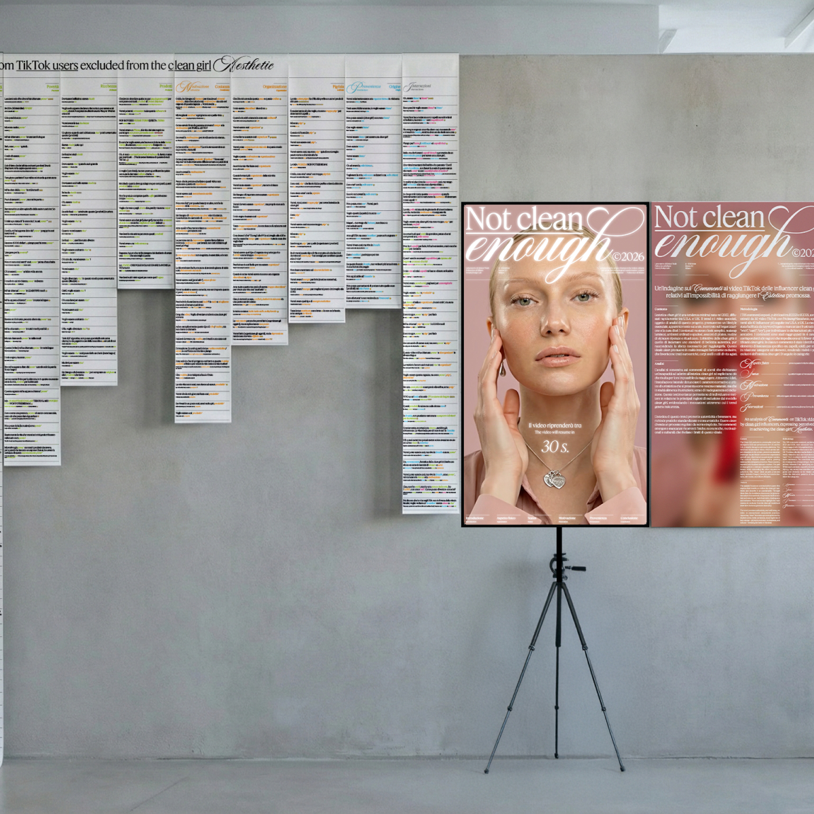

Un’indagine sui commenti ai video TikTok delle influencer Clean Girl, relativi all'impossibilità di raggiungere l’estetica promossa
 



Il progetto è un'installazione che analizza le problematiche legate alla clean girl aesthetic espresse dagli utenti nei commenti ai video delle influencer; l'opera si compone di un'installazione fisica (una parete di commenti stampati) e di un video.
La parete dei commenti è costituita da 705 commenti selezionati, tratti da video TikTok pubblicati da influencer del filone clean girl, che descrivono ciò che gli utenti sentono di non avere per potersi conformare a tale estetica.
Il video ha lo scopo di mostrare e contestualizzare i commenti esposti sulla parete, permettendo al pubblico di comprendere l’origine degli aspetti problematici del trend prima che questi diventino espliciti. Inizialmente, viene presentato l'archetipo della clean girl, evidenziando chi sono queste creator, cosa fanno e lo stile di vita che promuovono. Per questo motivo, a differenza dell'installazione fisica che elenca solo i commenti, il video incorpora elementi visivi e sonori provenienti dai contenuti selezionati tramite l'hashtag #cleangirlaesthetic. L'obiettivo finale è presentare il fenomeno della clean girl mostrando come siano nate le categorie utilizzate per organizzare i commenti a parete.
I dati provengono da 30 video TikTok con l'hashtag #cleangirlaesthetic (2023-2025) di influencer residenti negli Stati Uniti e nel Regno Unito. I commenti sono stati raccolti e classificati manualmente in cinque categorie (Aspetto, Ricchezza, Motivazione, Provenienza e Intersezioni) basate su tratti ricorrenti. Nell'artefatto, i commenti sono organizzati per categoria e contrassegnati da un "Elemento di Insicurezza" (Insecurity Element), dimostrando come l'ideale di bellezza "pulita" — presentato come naturale e autentico — sia in realtà esclusivo e legato a specifici standard estetici, economici e culturali, continuamente rinforzati dall'immaginario delle influencer.
Datasets
- G.03_Visualization_Dataset
- G.03_Evaluation_Dataset
- G.03_Video_Dataset
Design dell’artefatto
L'artefatto espone 705 commenti estratti manualmente da 30 video TikTok di influencer statunitensi e britanniche, i quali esprimono le mancanze percepite dagli utenti. Ogni commento è stato tradotto in italiano e in inglese. Abbiamo iniziato con la raccolta manuale dei commenti (semplificata dalla ricerca di parole chiave specifiche che esprimono mancanza, come "vorrei", "non posso", "piangere") e abbiamo proseguito con la classificazione di ogni commento in cinque categorie principali di Mancanza (Categories of Lack):
- Aspetto fisico (Appearance): preoccupazioni relative all'aspetto fisico. Ad esempio: "Vorrei che la mia pelle fosse così perfetta"; "Se fossi come te, non mi lamenterei mai più del mio corpo, sei così carina".
- Status (Status): questioni relative al benessere economico. Ad esempio: "Mi hai dato della povera in trentamila lingue"; "Mi sentivo già povera con così tanti prodotti, poi quando ha tirato fuori un sapone di Chanel ho avuto la certezza di essere estremamente povera".
- Motivazione (Motivation): problematiche comportamentali e motivazionali. Ad esempio: "Le persone con la depressione spesso fanno fatica a trovare la motivazione per lavarsi; non tutti abbiamo gli stessi privilegi"; "Vorrei essere così, senza sforzo".
- Provenienza (Provenance): difficoltà legate all'etnia o al contesto culturale di provenienza. Ad esempio: "Vorrei solamente essere una ragazza bianca in Alabama"; "Vorrei essere bianc* per essere una clean girl".
- Intersezioni (Intersections): commenti che si riferiscono a più di una sola categoria. Ad esempio: "Oh, essere bianc* e biond*"; "Se avessi tutti quei soldi da spendere, mi comprerei una pelle nuova".
Ogni commento è stato ulteriormente categorizzato tramite un Elemento di Insicurezza (es. corpo, soldi, ...), identificato a sua volta da un Tratto di Insicurezza (es. pelle, depressione, pigrizia, ...). Ad esempio, il commento: "Le mie occhiaie mi rovinano tutto" è categorizzato in questo modo:
- Categoria: Aspetto
- Elemento di Insicurezza: viso
- Tratto di Insicurezza: occhiaie
La parete dei commenti presenta i 705 commenti ordinati innanzitutto per Categoria principale (da sinistra a destra) e, all'interno di ogni categoria, per Elemento di Insicurezza, garantendo che tutti i commenti con un tema comune (es. Aspetto - CORPO) siano affiancati.
Il layout dei commenti riflette l'estetica minimalista, essenziale e ordinata della clean girl (caratteri graziati, colori pastello), con l'italiano come lingua principale, la traduzione inglese posta più in piccolo al di sotto e il Tratto di Insicurezza evidenziato in corsivo e nel colore della rispettiva categoria.
Il video è stato sviluppato integrando tecnologie di IA generativa, partendo dall'analisi estetica delle dieci influencer di riferimento selezionate per la ricerca. Tra queste, Daisy Herriot (@daisyherriot) è stata scelta come figura centrale in quanto una delle influencer con il maggior seguito e quella che più fedelmente incarna l'estetica clean girl; il suo volto è stato quindi utilizzato come base per sintetizzare l'immagine ideale della tipica clean girl. Attraverso l'impiego di Google Flow e Veo 3.1, sono stati generati cinque contenuti video: un'introduzione neutrale con timer di avvio e quattro video tematici. Ogni clip riflette rigorosamente le palette cromatiche, le azioni e gli oggetti di scena distintivi delle categorie individuate (aspetto fisico, status, motivazione e provenienza). La narrazione è supportata da una selezione di clip estratte e destrutturate dai 30 video originali dell'analisi, strutturata per rispondere a domande guida che accompagnano l'utente dalla definizione del fenomeno fino alla visualizzazione dei dati.